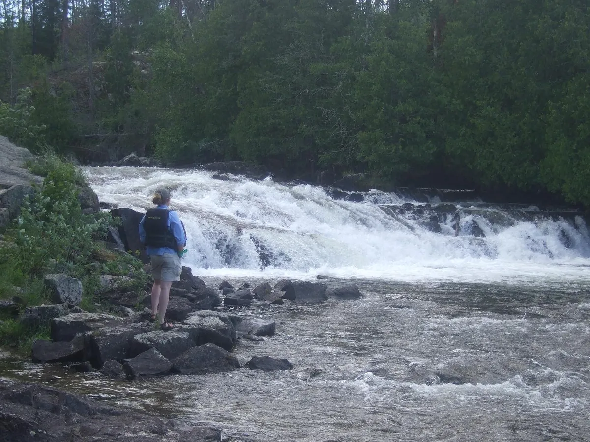
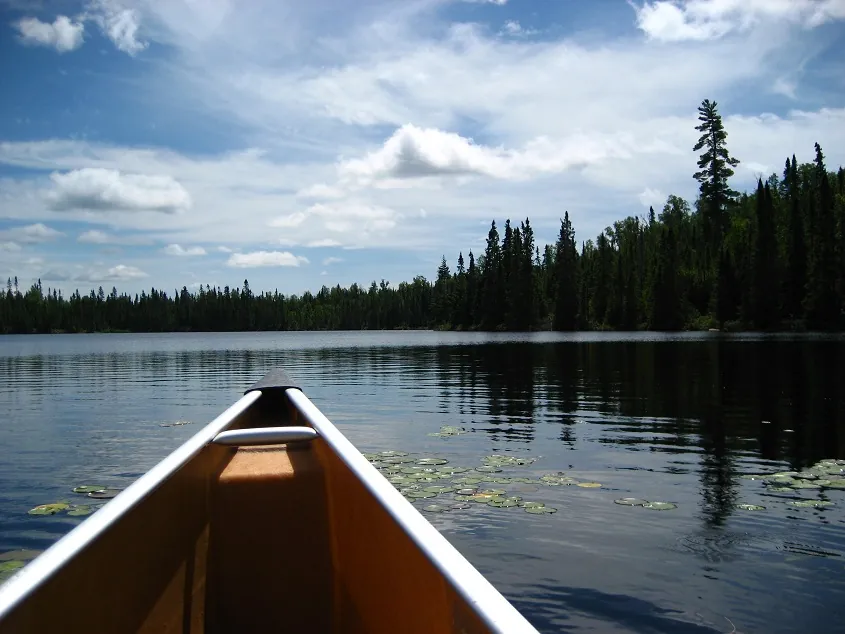

Canoe routes from Tuscarora
Base camps for kids and beginners, border-route fishing, and two-week Quetico loops. Tell us how long you have and we’ll help you choose.
Routes by average days
Every route below, as we list it, laid out by how many days it usually takes.
Boundary Waters Canoe Area Wilderness
- Snipe Lake Loop1-4 days on average. Beautiful scenery, small lakes
- Seagull Lake Base Camp2+ days on average. Sandy beaches, day trip options, great trip with kids
- Long Island Base Camp2+ days on average. Great campsites, easy portages, good beginner trip
- Horseshoe Lake Base Camp2+ days on average. Moose viewing opportunities, easy portages, good for kids
- Red Rock Loop2-3 days on average. Excellent fishing, few portages, great beginner loop
- Granite River4 days on average. Waterfalls, great for serious anglers
- Saganaga Lake Only4 days on average. Base camp trip, no portages, great campsites
- Frost River Loop4 days on average. Rugged, remote, beautiful
- Seagull Lake to Saganaga Lake (Border Route)4-5 days on average. Grand slam fishing, larger lakes, classic BWCA scenery
- Tuscarora West Routes (Missing Link to Brant)4-7 days on average. Great spring lake trout fishing, beautiful campsites
- Cross Bay Lake to Poplar4-7 days on average. Moose viewing opportunities, adaptable route
- Round Lake to Seagull Lake5-10 days on average. Personal favorite
Quetico Provincial Park
- Saganagons Lakes to Boundary Point Base Camp4 days on average. Great fishing base camp route
- Falls Chain to Kawnipi Lake5-7 days on average. Beautiful waterfalls, world-class walleye fishing
- Wawiag River/Mack Lake Loop6-8 days on average. Remote, rugged, challenging. Great fishing.
- Man Chain7 days on average. Beautiful campsites, moderate to challenging trip
- Agnes Lake Loop9 – 14 days on average. Long trip, stunning scenery, great fishing
How far is a rod? 16.5 feet. There are approximately 320 rods in a mile. A portage mile feels different from any other mile traveled, so you will find yourself getting the “feel” for what a 50 rod portage is like.
Questions to settle with your group
- How long is your trip?
- How many people are in your group?
- What are the ages and fitness levels of your group members?
- Have you been to the BWCA/Quetico before?
- How many hours a day do you plan to travel?
- How often are you willing to portage?
- Are you looking to base camp or travel every day?
- Do you want to fish? What species of fish are you looking for?
- Do you prefer larger lakes or smaller water?
- Are you looking for moose? waterfalls? pictographs?
Then call us at 218-388-2221 or 1-800-544-3843, and together we’ll create the perfect canoe trip route for your group.

Boundary Waters permits
The U.S. Forest Service uses a permit system from May 1 – September 30 each year. A limited number of groups can enter at each entry point (maximum group size is 9 people and 4 watercraft), and popular entry points fill up quickly.
We’re a Forest Service issuing station. If you’re renting canoes from us, we’re happy to reserve your permit for you. Reserving your own on recreation.gov? List Tuscarora as your issuing station and we’ll issue it to you in our office.
BWCAW permit fees
- $6 reservation fee (non-refundable)
- $16/trip/adult user fee
- $8/trip/youth user fee
Watch the Forest Service’s Leave No Trace videos Part I and II before your trip. You’ll watch the third in our office when you pick up your permit; all group members must be present.

Going to Quetico
Quetico Provincial Park shares a border with Minnesota from Lac La Croix to Saganaga Lake. We’re near its south eastern edge, and our tow service on Saganaga Lake gets you as close to the ranger station as possible. We can also arrange fly-in trips.
- U.S. citizens need both a Backcountry permit and a Remote Area Border Crossing (RABC) permit
- RABC applications can take up to 6 weeks, and each guest must apply for their own (CAN$30)
- The nearest ranger station is Cache Bay: Knife Lake, Man Chain Lakes, Falls Chain Lakes, Boundary Point – Saganagons
- Ontario fishing licenses are required; barbless hooks, no live bait